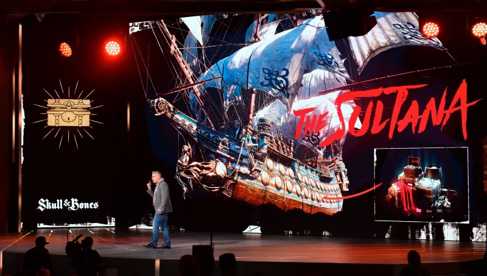
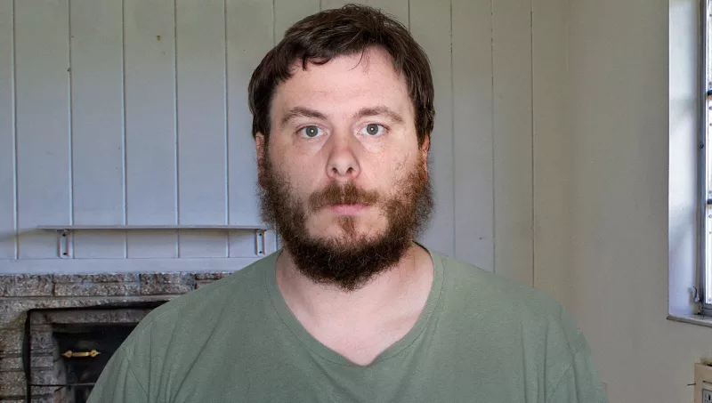
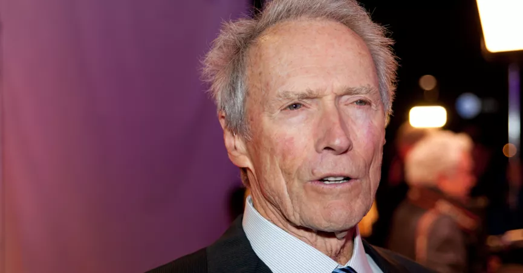

E3 organizers cancels convention after discovering immersive power of literature

LOS ANGELES—The annual Electronic Entertainment Expo was called off Tuesday after its organizers discovered the immersive
power of literature, reportedly realizing that no video game could ever compare to the
wonder of opening a work by Leo Tolstoy or Jorge Luis Borges and becoming engrossed in
a masterful volume of fiction. “After learning how poorly video games fare alongside
the rich explorations of the human condition contained in novels such as Mrs. Dalloway
and Moby Dick, we have concluded it is best to cancel E3,” said Electronic Software Association
CEO Michael Gallagher, clutching a copy of One Hundred Years Of Solitude as he observed
that mere pixels on a screen could ever engage one’s imagination as fully as the majestic
sweep of Gabriel García Márquez’s magic realism prose.
Neflix Defends 'Queen Eye' Episode Where The Fab Five Forced To Euthanize Completely Hopeless Slob

LOS GATOS, CA—Insisting that the controversial episode served as a stirring reminder of the importance of self-improvement,
Netflix representative Tina Komal spoke in defense of a recent episode of ‘Queer Eye’
wherein the the Fab Five were forced to euthanize a contestant who was a completely hopeless
slob. “We certainly wish that this contestant had been capable of enacting the simple
tips suggested by our team of lifestyle experts, but unfortunately, euthanization was
ultimately deemed the only practical option for improving his life,” said Komal in a
stirring defense of the episode where, after futilely encouraging the unemployed Tim
Yonkers to try on a variety of tailored button-up shirts and walking him through a fresh
mango salsa recipe to shake up his carb-heavy diet, the Fab Five solemnly led Yonkers
out to his re-landscaped backyard to be mercy-killed with a single gunshot to the head
by grooming guru Jonathan Van Ness.
Previous
Next
Is Clint Eastwood Leaving Hollywood?

Clint Eastwood said that he was leaving Hollywood because it was full of "Amerikan" traitors
This is not a genuine quote from Clint Eastwood, but rather a fabrication intended to attract the
attention of alt-right conspiracy theorists by hitting on some of their favorite topics: Donald Trump,
pedophilia, and Hollywood liberals. The NY Evening News (and other sites of its ilk) have pushed
this fictitious quote before, as a verbatim copy of this “article” was posted to the same web site
in March 2018. In both instances, the web site linked to the malware-infested BestUSAPoliticsNews.com.
Taylor Swift Grateful Kanye West Controversy Taking Heat Off New Swastika Tattoo
It’s undeniably wack that the Warriors, with the signing of DeMarcus Cousins to a one-year, $5.3 million
deal on Monday night, have managed to assemble an entire starting five that, when healthy, could
run the Eastern Conference All-Stars off the court. But what makes the earthquake of the Cousins
signing a little stranger than, for example, Kevin Durant’s move to Golden State, is that—by Cousins’s
account at least—no other teams were willing to make him an offer.
'Jurassic World:Fallen Kingdom'Casting Assistant Discusses Difficulties Of Finding Extras Who Are Willing
To Be Eaten Alive!
After He Watched Game Of Thrones Season 6, James Cameron Decided to bring "Jack" Back To 'Titanic 2'.